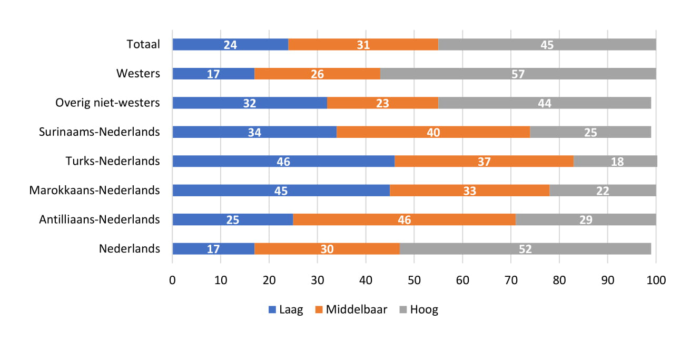
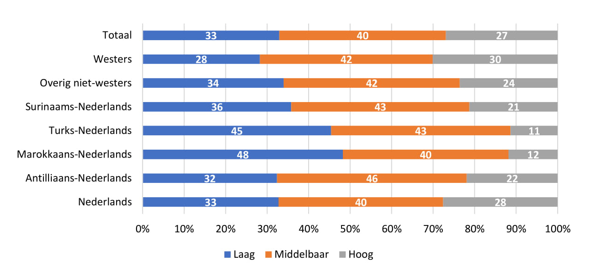

Onder alle inwoners van Den Haag heeft 45% een hoog, 31% een middelbaar en 24% een laag op-leidingsniveau. Hier zitten echter verschillen in naar herkomstgroep. Van de Antilliaans-Nederlandse inwoners heeft bijna de helft een middelbaar opleidingsniveau en ruim een kwart een hoog opleidingsniveau. Inwoners met een Marokkaanse en Turkse achtergrond hebben het hoogste aandeel met een laag opleidingsniveau (45% en 46%). Inwoners met een Nederlandse of westerse achtergrond hebben het hoogste aandeel met een hoog opleidingsniveau (52% en 57%).

3.2 Opleidingsniveau Nederland
Ook in Nederland heeft bijna de helft van de Antilliaanse-Nederlanders een middelbaar oplei-dingsniveau (46%). Dit komt overeen met de cijfers in Den Haag. Een verschil is dat landelijk gezien een derde van de inwoners met een Antilliaanse achtergrond een laag opleidingsniveau heeft, en ongeveer een vijfde een hoog opleidingsniveau. In Den Haag heeft een kwart een laag opleidings-niveau en ongeveer een derde juist een hoog opleidingsniveau.

3.3 Voortijdig Schoolverlaten
Het schooljaar 2011-2012 telde in totaal 1.600 vroegtijdige schoolverlaters (VSV-ers) in Den Haag, wat neerkomt op een gemiddelde van 4,9%. Het grootste percentage schoolverlaters is onder jon-geren met een Antilliaanse achtergrond (9,2%). Rotterdam heeft in 2014 een iets hoger percentage VSV-ers (5,4%), en ook hier hebben de Antilliaans-Nederlandse scholieren het hoogste percentage VSV-ers (7,4%).
#|echo: Falselibrary(knitr)
Warning: package 'knitr' was built under R version 4.1.3
library(kableExtra)myTable<-data.frame(header1=c("Nederlands","Antilliaans-Nederlands","Marokkaans-Nederlands","Turks-Nederlands","Surinaams-Nederlands","Overig niet-westers","Westers","Totaal"),header2=c("545","104","187","228","203","172","161","1600"),header3=c("4,0","9,2","5,7","5,4","4,8","4,8","5,7","4,9"),header4=c("1657","358","517","645","516","375","351","4419"),header5=c("5,1","7,4","6,1","6,9","6,3","4,8","4,5","5,4"))kable(myTable,col.names =c("Achtergronden", "n", "%", "n", "%"),caption ="Voortijdige Schoolverlaters Den Haag (2011-2012) en Rotterdam (2014")
Voortijdige Schoolverlaters Den Haag (2011-2012) en Rotterdam (2014
Achtergronden
n
%
n
%
Nederlands
545
4,0
1657
5,1
Antilliaans-Nederlands
104
9,2
358
7,4
Marokkaans-Nederlands
187
5,7
517
6,1
Turks-Nederlands
228
5,4
645
6,9
Surinaams-Nederlands
203
4,8
516
6,3
Overig niet-westers
172
4,8
375
4,8
Westers
161
5,7
351
4,5
Totaal
1600
4,9
4419
5,4
3.4 Mogelijke verklaringen
Leerlingen met een migratieachtergrond verlaten school vaker vroegtijdig dan leerlingen met een Nederlandse achtergrond. Dit geldt met name voor jongeren met een Antilliaanse achtergrond. Vaak zijn deze jongeren hun onderwijsloopbaan al gestart met een taalachterstand, doordat zij de Nederlandse taal onvoldoende beheersen (Meeng 2008) en deze ook niet altijd thuis gesproken wordt (Holter 2014). Deze achterstanden worden tijdens hun onderwijsloopbaan onvoldoende ingelopen, waardoor zij groter risico hebben op vroegtijdig schoolverlaten (Meeng 2008).
Ook de samenstelling van het gezin vormt een risicofactor. Zo lopen kinderen uit eenoudergezin-nen meer risico op voortijdig schoolverlaten (Traag and Van der Velden 2008). De verklaring die hier-voor wordt gegeven is dat kinderen uit eenoudergezinnen minder sociale interactie hebben, aangezien maar een ouder beschikbaar is. Dit betekent dat deze kinderen minder van de hulpbronnen van hun ouders kunnen profiteren, wat de kans op schoolverlaten vergroot. En zoals ook blijkt uit hoofdstuk 2, zijn er relatief veel eenoudergezinnen onder Antilliaanse-Nederlanders.
Holter, N. 2014. Oorzaken van Voortijdig Schoolverlaten. Utrecht: Nederlands Jeugdinsituut.
Meeng, C. 2008. “Traha Brug II: Onderzoek Naar de Aanpak van Antilliaanse En Arubaanse Risicojongeren in de Gemeente Den Haag in de Periode 2005-2008.” Master’s thesis, Universiteit van Leiden.
Traag, T., and R. W. Van der Velden. 2008. Early School-Leaving in the Netherlands. The Role of Student-, Family- and Schoolfactors for Early School-Leaving in Lower Secondary Education. Maastricht: Research Centre for Education; the Labour Market.